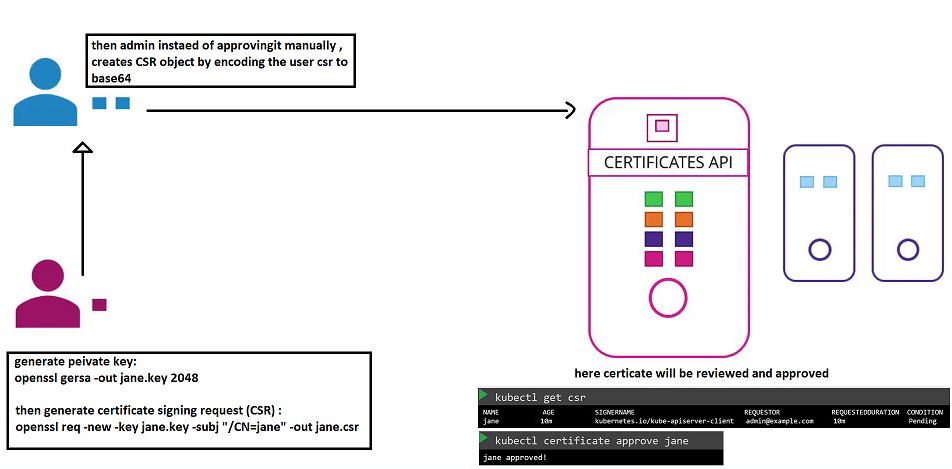
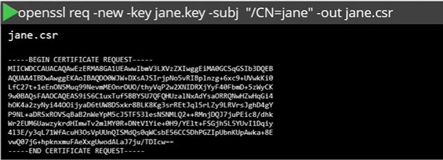
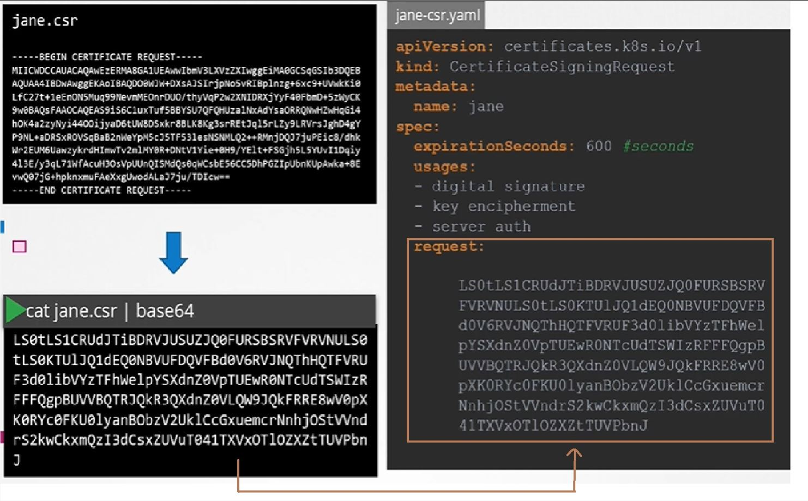
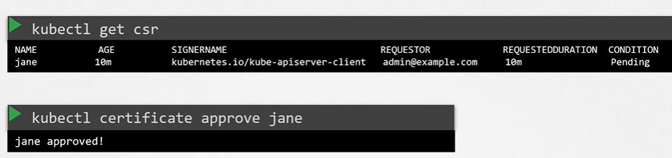
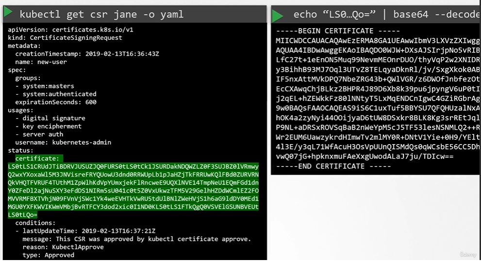

Certificate Singning Request Object
Let say we have new user JANE in company who needs access to k8 cluster.
So Jane first create key :
openssl gersa -out jane.key 2048
Then creates the Certificate Signing Request :
openssl req -new -key jane.key -subj "/CN=jane" -out jane.csr
Now Admin will take the csr, encode it to base64, then create a CSR Object by using encoded CSR.
Then it is reviewed and approved by the admin, kubernetes signs the certificate using kubernetes CA key pairs and generates the certificate for the user using below commands:
This certificate then extracted and shared with user.
Note:All these processes related to Certificate are controlled by the Control Manager in K8